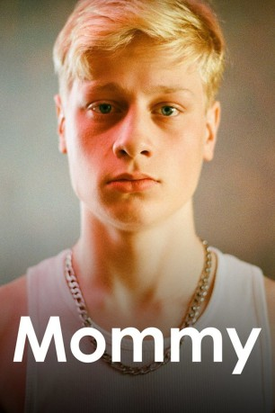

#1106 Mommy
 
 IMDB-Wertung: 8.1 / 10
IMDB-Wertung: 8.1 / 10  Metascore: 74
Metascore: 74 
Die verwitwete Diane Després ist die Mutter eines gewalttätigen Jungen. Sie findet neue Hoffnung, als eine neue Nachbarin, die junge und mysteriöse Kyla, sich in ihren Haushalt einbringt. Gemeinsam gelingt es ihnen die Balance in die sensible Beziehung zu bringen und neue Hoffnung aufkommen zu lassen.
Jahr: 2014
Dauer: 139 Minuten
FSK: 12
Land: Kanada Studio: Weltkino FilmverleihTonspuren:
Untertitel: Deutsch,
Auflösung: 1080p (1920x1040) Größe: 5621 MB
Genre: Drama
Regisseur: Xavier Dolan
Drehbuch: Xavier Dolan
Soundtrack: Noia
Darsteller:
- Anne Dorval als Diane 'Die' Després
 Suzanne Clément als Kyla
Suzanne Clément als Kyla- Antoine-Olivier Pilon als Steve O'Connor Després
- Patrick Huard als Paul
- Pierre-Yves Cardinal als Gardien de sécurité #1 , uncredited
- Vincent Fafard als Joueur de pool , uncredited
 Isabelle Nélisse als Fille de Kyla , uncredited
Isabelle Nélisse als Fille de Kyla , uncredited- Alexandre Goyette als Patrick
- Michèle Lituac als Directrice du centre
- Viviane Pascal als Marthe
- Natalie Hamel-Roy als Natacha
- Steven Chevrin als Adult Steve
Datei: X:\2014(G-M)\Mommy (2014, FSK12, 1920x1040).mkv seit 20.05.2015
Festplatte: HD 2013(I-Z)-2014(A-Z)
 Es gibt insgesamt 136 Filme in der Gruppe '2014(G-M)'
Es gibt insgesamt 136 Filme in der Gruppe '2014(G-M)'